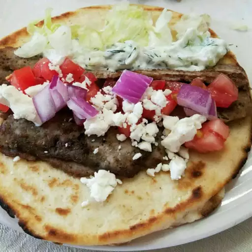

Gyros

Description
This is the best gyros
Ingredients
- ½ medium onion, cut into chunks
- 1 pound ground lamb
- 1 pound 80/20 ground beef
- 1 tablespoon minced garlic
- 1 teaspoon dried oregano
- 1 teaspoon ground cumin
- 1 teaspoon dried marjoram
- 1 teaspoon ground dried rosemary
- 1 teaspoon ground dried thyme
- 1 teaspoon black pepper
- 1½ teaspoons fine sea salt
- cooking spray
Steps
-
Pulse onion in a food processor until finely chopped, about 5 (1-second)
pulses. Scoop onions onto the center of a towel, gather up the towel
ends, and squeeze to remove liquid
-
Combine onions, lamb, beef, garlic, oregano, cumin, marjoram, rosemary,
thyme, pepper, and salt in a large bowl. Mix with your hands until well
combined. Cover and refrigerate 1 to 2 hours to allow the flavors to
blend.
-
Preheat the oven to 325 degrees F (165 degrees C). Evenly coat a
7x4-inch loaf pan with cooking spray.
-
Working in 2 batches if necessary, place meat mixture into a food
processor and pulse until finely chopped and the texture feels tacky,
about 1 minute. Transfer mixture into prepared loaf pan, and pack down
to make sure there are no air pockets.
-
Line a medium roasting pan with a damp kitchen towel. Place the loaf pan
in the center of the towel-lined roasting pan, and transfer it into the
preheated oven. Carefully pour boiling water into the roasting pan until
it comes halfway up the sides of the loaf pan.
-
Bake in the preheated oven until gyro meat is no longer pink in the
center, about 1 hour to 1 hour 25 minutes. An instant-read thermometer
inserted into the center should read at least 160 degrees F (70 degrees
C)
-
Pour off any accumulated fat, and allow to cool slightly before slicing
thinly and serving.
Back home